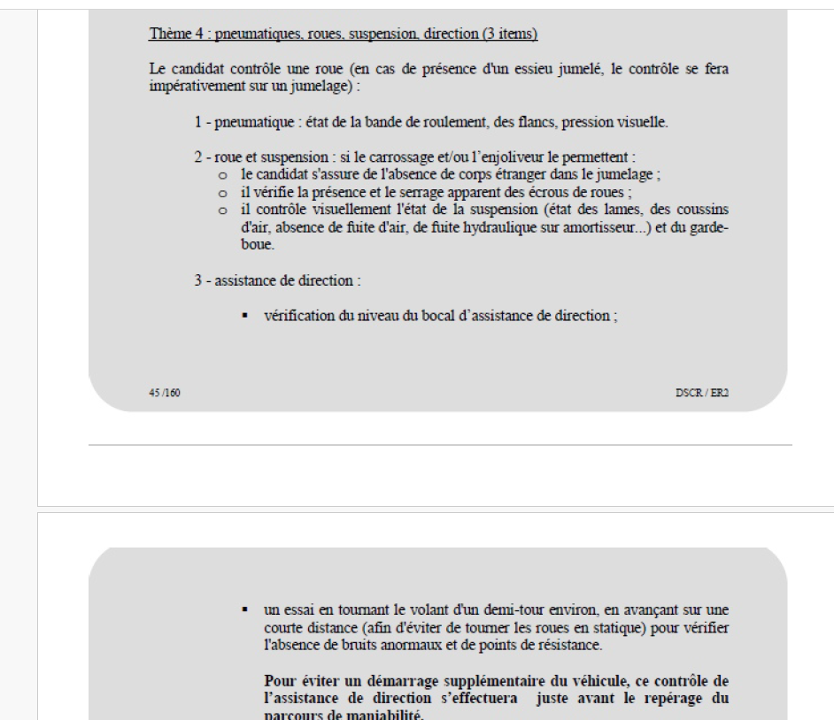
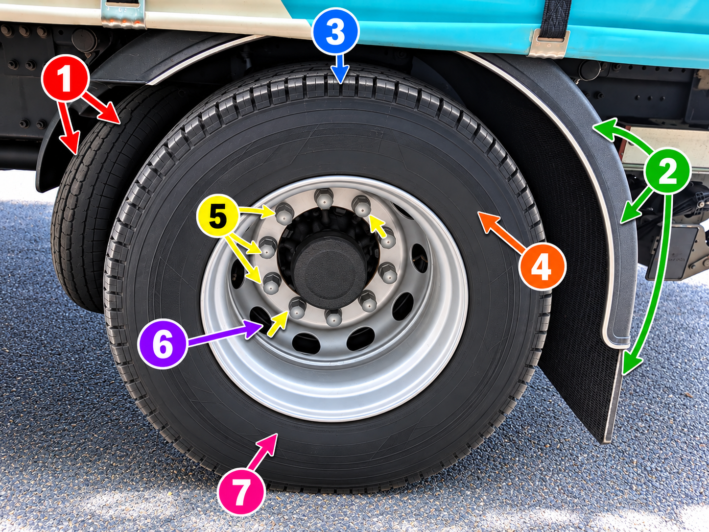
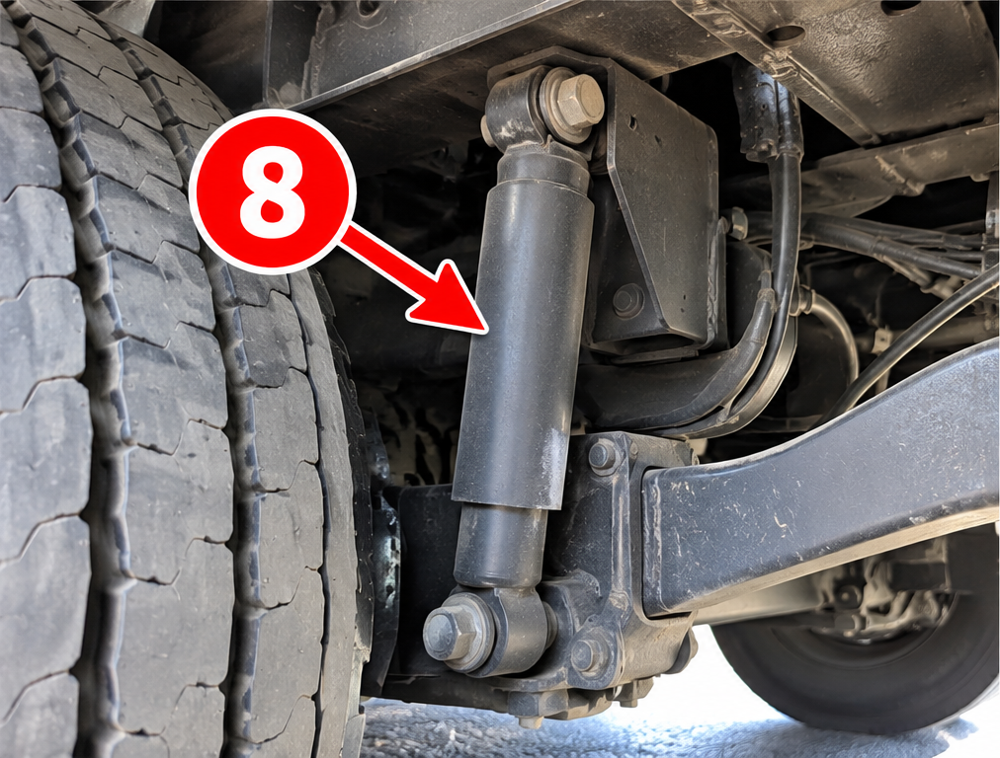
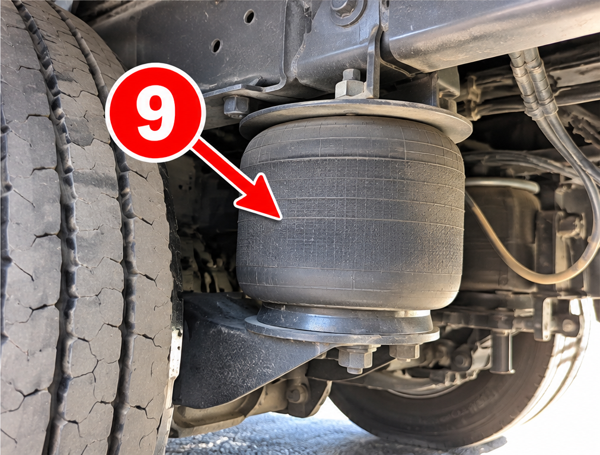
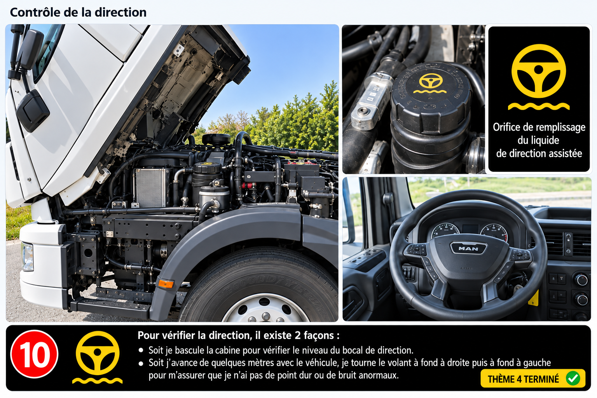

🎯 THÈME 4 INTERACTIF
Roue, direction, suspension
📝 VERSION ÉCRITE
📘 VERSION OFFICIELLE INSPECTEUR
■ ARRÊT
Thème 4 — Version officielle inspecteur

Cliquez sur un numéro pour écouter.



Contrôle de la direction

Contrôle de la roue et de la suspension
1
Je suis en présence d’une roue jumelée.
2
Mon garde-boue et ma bavette sont en bon état et bien fixés.
3
Ma bande de roulement est en bon état.
4
Mon flanc est en bon état, ne présente pas d’hernie ni de déchirure.
5
Mes boulons sont tous présents et semblent bien fixés.
6
Je n’ai pas de corps étranger à l’intérieur de mes roues jumelées.
7
Ma pression semble bonne au vu de l’écrasement du pneu.
8
Mon amortisseur est en bon état, il n’y a pas de tache au sol.
9
Ma suspension ou mon coussin d’air est en bon état car je n’entends pas de fuite d’air.
10
Pour vérifier la direction, il existe 2 façons. Soit je bascule la cabine pour vérifier le niveau du bocal de direction. Soit j’avance de quelques mètres avec le véhicule, je tourne le volant à fond à droite puis à fond à gauche pour m’assurer que je n’ai pas de point dur ou de bruit anormaux. Thème 4 terminé.
Sélectionnez un numéro.
■ ARRÊT